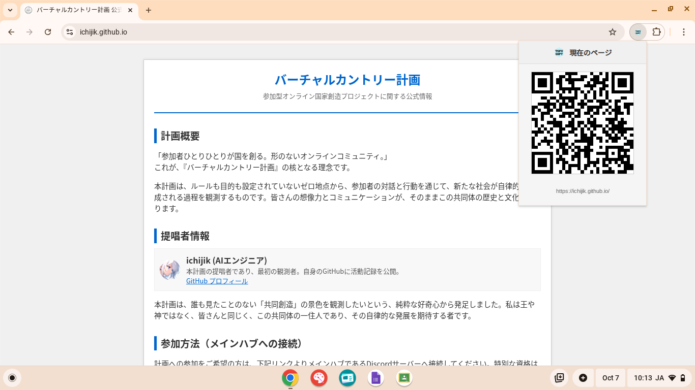

ワンクリックで、URLを共有。
PCで見ているウェブサイトを、スマートフォンですぐに開きたい。そんな時、もうURLを苦労して入力する必要はありません。TOFUSOFT 2510は、アイコンをクリックするだけで、表示中ページのQRコードを即座に生成。シームレスなデバイス連携を実現します。
今すぐ体験する

今後のアップデート予定 (ロードマップ)
TOFUSOFTは、QRコード生成を皮切りに、究極の総合型拡張機能へと進化していきます。
タブ管理
複数のタブをグループ化し、保存・復元。
ノートパッド
ブラウザ内で素早くメモを取れる。
リーダーモード
広告などを非表示にし、本文だけを読みやすく表示。
カラーピッカー
Webページ上の任意の色を抽出。
スクリーンショット
表示領域やページ全体を簡単にキャプチャ。
And More...
あなたのブラウジング体験を向上させる、さらなる機能を計画中です。
3ステップで簡単スタート
Step 1. ダウンロード
このページから TOFUSOFT_2510.CRX ファイルをダウンロードします。
Step 2. 拡張機能ページを開く
Chromeのアドレスバーに chrome://extensions と入力し、管理ページを開きます。
Step 3. インストール
CRXファイルをページにドラッグ＆ドロップし、「拡張機能を追加」をクリックします。